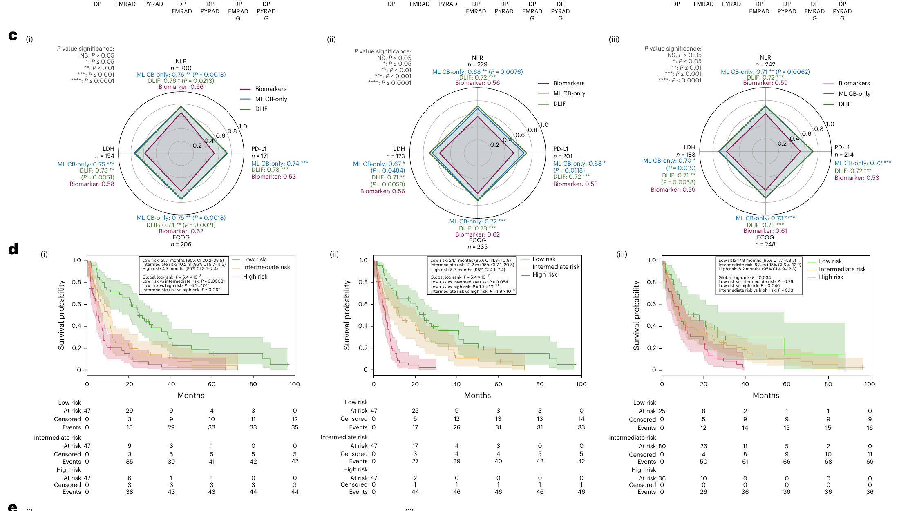

Kaplan-Meier 存活曲線與風險分組
白話解釋
- 橫軸是時間，縱軸是「還活著的比例」。曲線往下掉代表有人過世。
- 把病人依 AI 分數分成低、中、高風險三組，各畫一條線。三條線分得越開，代表 AI 越能分辨誰的預後好壞。
- 中位存活：該組有一半的人過世的時間點。
- log-rank 檢定：檢查兩條曲線的差距是不是只是運氣。
在這篇論文怎麼用
- 機器學習 Cox 模型分出的低風險組中位存活 25.1 個月，高風險組 4.7 個月，P = 6.1 × 10⁻⁸ prelaj2026 p.6。
- 但中風險與高風險之間沒有顯著差異 prelaj2026 p.6。
- 對照的 LIPI 分數只能分出低風險與高風險 prelaj2026 p.6。
